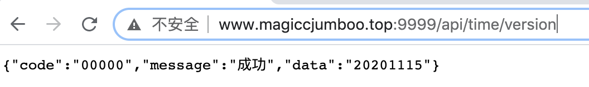
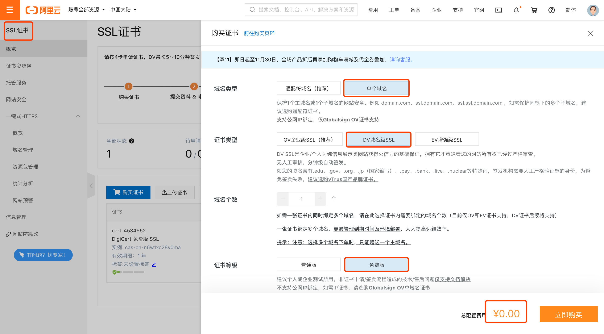
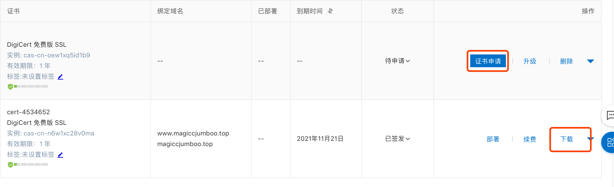
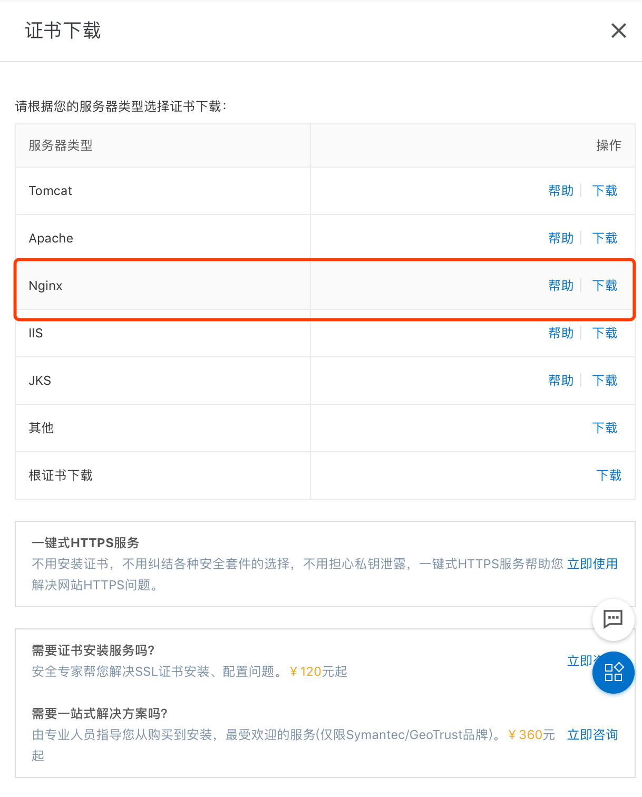
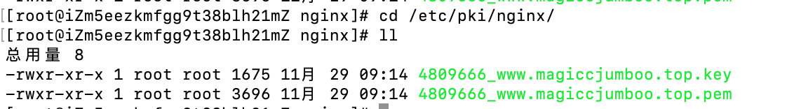
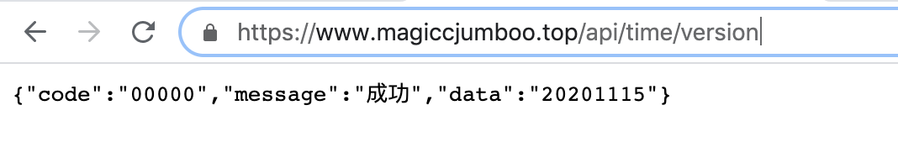

我们在使用springboot编写的后台接口，默认只有http协议可以访问，但是微信小程序只能访问https类型的接口，所以我们需要将http接口通过nginx转化成https接口。
一、编写springboot代码，暴露http接口
这里就正常的编写springboot代码，暴露localhost:9999/api/time/version接口，然后部署到Linux服务器中。
参考代码：https://github.com/shelimingming/time_manage/tree/main/time_manage_backend
这里已经将www.magiccjumboo.top域名绑定了服务器。如果想通过https暴露接口必须绑定域名。
访问：http://www.magiccjumboo.top:9999/api/time/version，即可得到结果

二、通过Nginx代理后端接口
下面我们需要通过Nginx代理这个接口：
1、安装Nginx
首先安装Nginx，详细过程这里就不赘述，可以参考这篇博客：https://www.cnblogs.com/zhangliuhero/p/13804731.html。
2、配置nginx.conf
vi /etc/nginx/nginx.conf:
1 | server { |
配置/api路径都转发到本机的9999端口，就是我们刚刚发布的接口上，然后重新加载nginx，nginx -s reload。
3、验证
访问:http://www.magiccjumboo.top/api/time/version

但是访问https://www.magiccjumboo.top/api/time/version，还是访问不通，所以我们开始https的配置。
三、在阿里云上申请免费的 SSL证书
在阿里云中搜索SSL证书，点击购买证书，安装下图进行选择，可以免费申请SSL证书。

点击申请证书，填写域名相关信息，几分钟后自动审批完成，点击下载，可以下载Nginx的证书：


四、Nginx中SSL配置
将下载的两个文件拷贝到Nginx的机器中：

vi /etc/nginx/nginx.conf:
1 | server { |
在配置文件中增加一个server监听443端口（https默认443端口），然后修改ssl配置指向刚刚上传的两个文件。
访问https://www.magiccjumboo.top/api/time/version：

至此，大功告成，可以在微信小程序中调用该接口了！！！